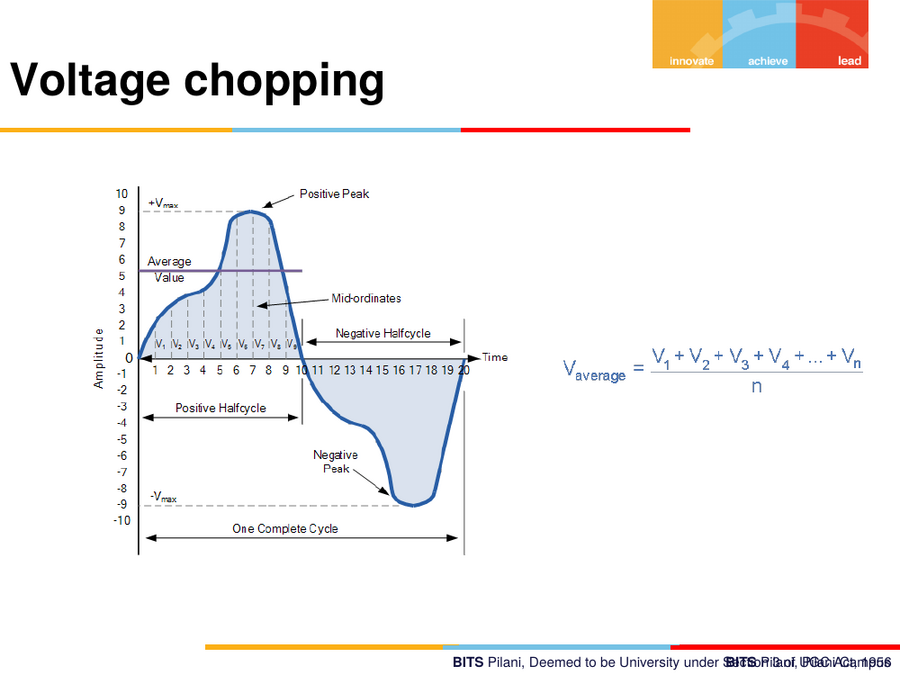
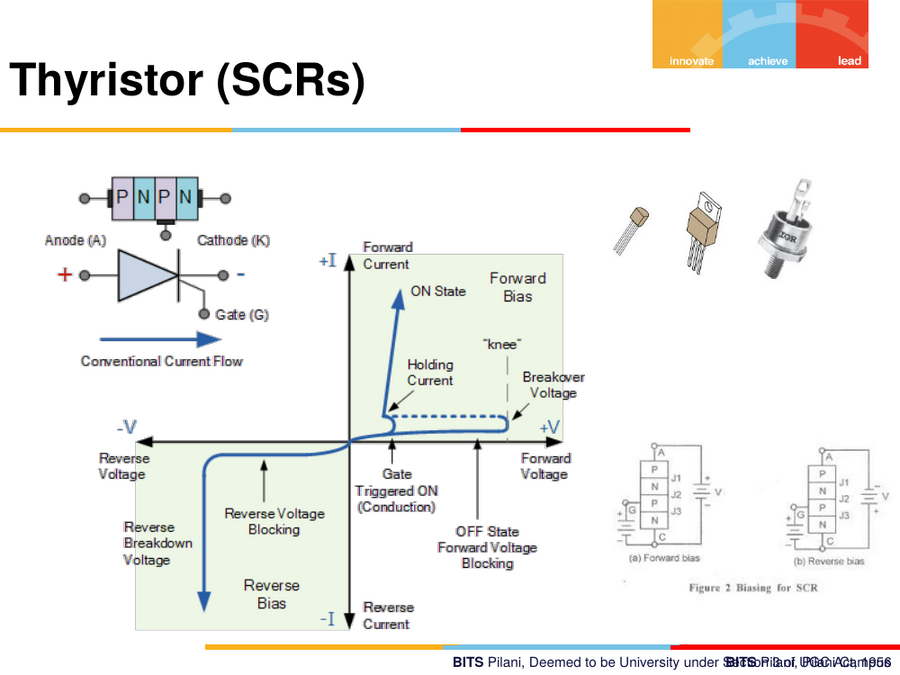
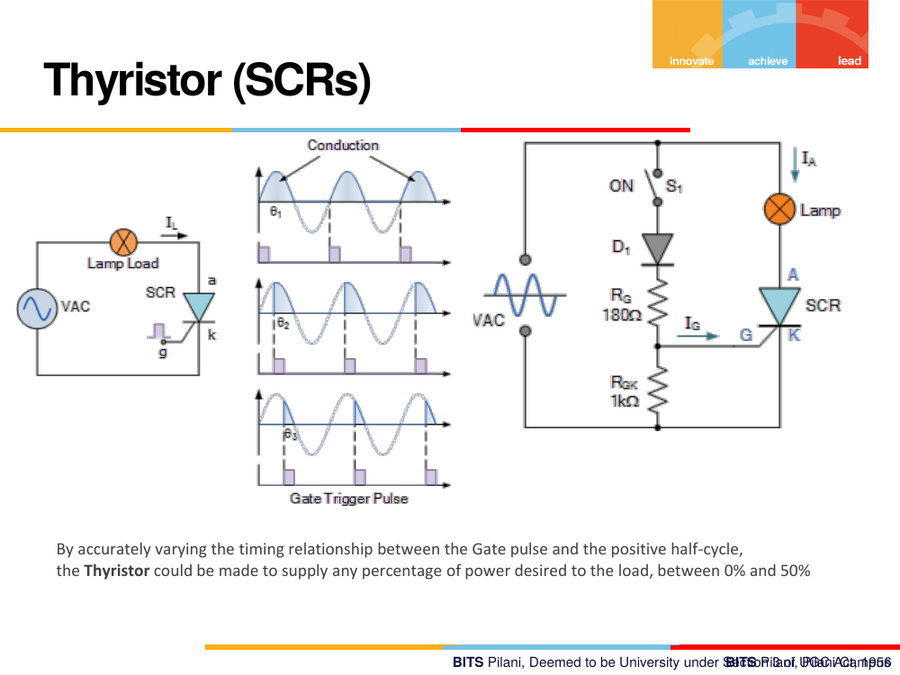
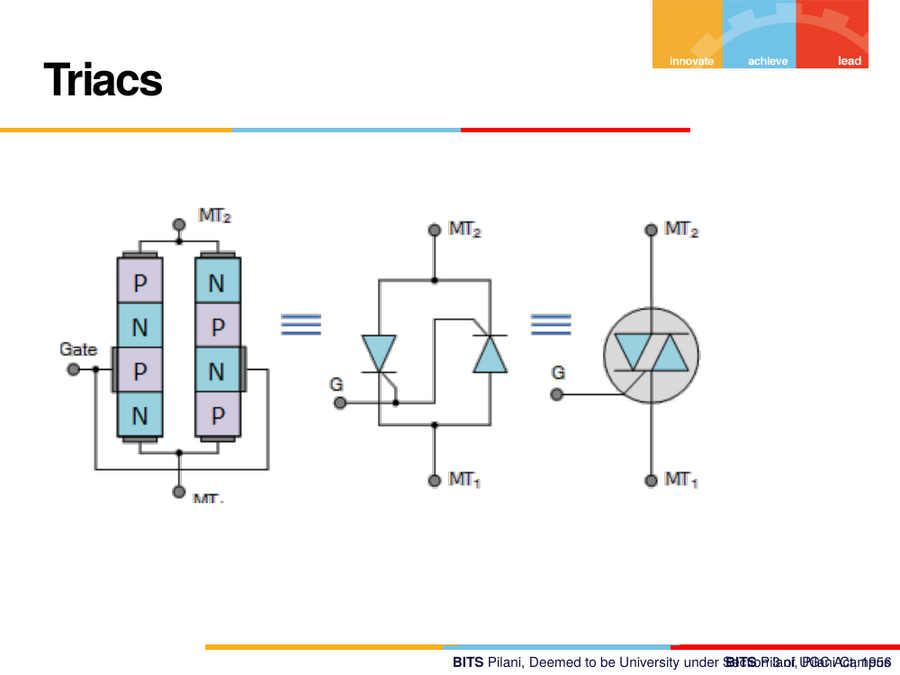

14. Power Electronics — Voltage Chopping, Thyristors, Triacs
14.1 Voltage chopping / average voltage concept
For a waveform made of many discrete instantaneous samples
(Vâ‚, Vâ‚‚, V₃, … Vn) over one complete cycle, the average value is:
V_average = (V₠+ V₂ + V₃ + … + Vn) / n
This concept underlies power control by chopping: instead of applying a full continuous voltage to a load, the supply is switched on/off (or partially conducted) at high frequency, and the effective (average) voltage delivered to the load is controlled by adjusting how much of each cycle the switch conducts — this is the conceptual basis of PWM (Pulse Width Modulation)-style power control, and specifically of how thyristors/SCRs regulate AC power (below).

14.2 Thyristor (SCR — Silicon Controlled Rectifier)
Structure and symbol
A 4-layer P-N-P-N device with three terminals:
- Anode (A)
- Cathode (K)
- Gate (G) — the control terminal
Anode ──[P-N-P-N]── Cathode
│
Gate
I–V characteristic (four-quadrant behaviour)
- Forward blocking region: with no gate trigger, the SCR blocks forward current even though it's forward-biased (anode +, cathode −) — it behaves like an open switch until triggered.
- Forward "knee"/breakover: once triggered by a gate pulse, or if the forward voltage exceeds the breakover voltage, the SCR switches into conduction — a low-resistance ON state, and it will continue conducting (latches) even if the gate signal is removed, as long as current stays above the holding current.
- Reverse blocking region: with reverse voltage applied (anode −, cathode +), the SCR blocks current entirely (like a reverse-biased diode), up to its reverse breakdown voltage.

How it's used to control AC power delivered to a load
VAC ──┬── R_D (180 Ω) ── [SCR] ── R_LAMP LOAD
│
R_GK (1 kΩ) — sets gate trigger threshold
│
Gate Trigger Pulse (applied at a controllable phase angle θ)
By delaying the gate trigger pulse to a later point (θâ‚, θ₂, θ₃
…) within each positive half-cycle of the AC waveform, the SCR conducts for
a shorter or longer portion of that half-cycle — this is called
phase-angle control.
"By accurately varying the timing relationship between the Gate pulse and the positive half-cycle, the Thyristor could be made to supply any percentage of power desired to the load, between 0% and 50%."
(An ordinary single SCR conducts on only one half-cycle of the AC wave — hence the practical control range is bounded at 50% of full-wave power; a pair of SCRs, or a Triac, is used to control both halves — see below.)

14.3 Triac
A Triac can be understood as two SCRs connected in inverse-parallel (anti-parallel), sharing a common gate — this lets it conduct current in both directions, unlike a single SCR which only conducts one way.
Structure and terminals
MT2 (Main Terminal 2)
│
[P-N-P-N / N-P-N-P layered structure]
│
MT1 (Main Terminal 1)
│
Gate
Because it can control both the positive and negative half-cycles of an AC waveform (via phase-angle triggering, same principle as the SCR), a Triac can control power across the full 0–100% range of the AC waveform — it is the standard device behind household and automotive AC dimmer/speed controllers.

14.4 Where this fits in the course
This module is the practical payoff of the "semiconductor switches"
item on the fundamentals checklist from note 00-overview.md — thyristors
and triacs are the power-conversion class of semiconductor switch
(as opposed to BJTs/MOSFETs used mainly for logic-level switching and
signal amplification). They are the components that let a low-power
digital control signal (a gate pulse) govern a much larger AC power flow —
e.g. motor speed controllers, dimmers, and soft-start circuits in
automotive and industrial systems.
14.5 Quick comparison — BJT/MOSFET vs Thyristor/Triac
| BJT / MOSFET | SCR (Thyristor) | Triac | |
|---|---|---|---|
| Typical role | Logic-level switching, amplification | High-power AC/DC switching | High-power AC switching, both half-cycles |
| Turn-off | Removing base/gate drive turns it off | Latches ON — needs current to drop below holding current to turn off | Same latching behaviour, both directions |
| Conduction direction | Depends on device (mostly one-way) | One direction only | Both directions |
| Classic use case | Digital gates, small-signal switching | DC motor control, single-direction AC control | AC dimmers, AC motor speed control |